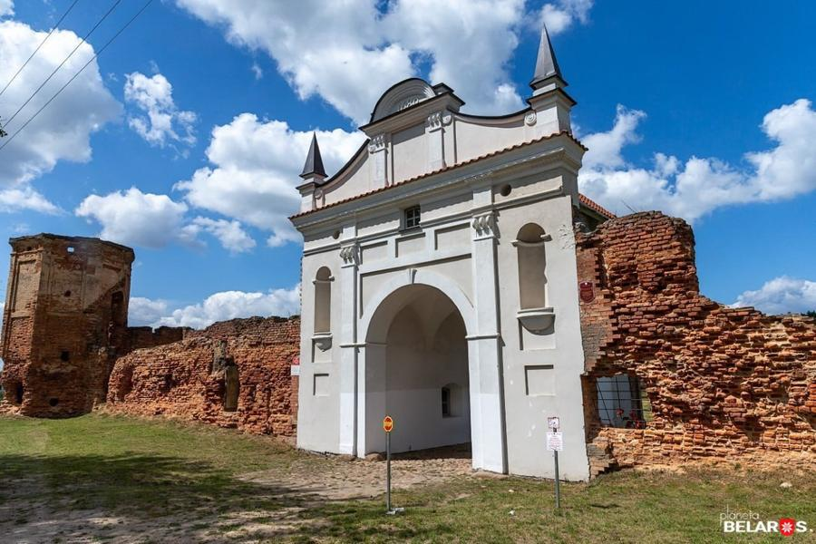
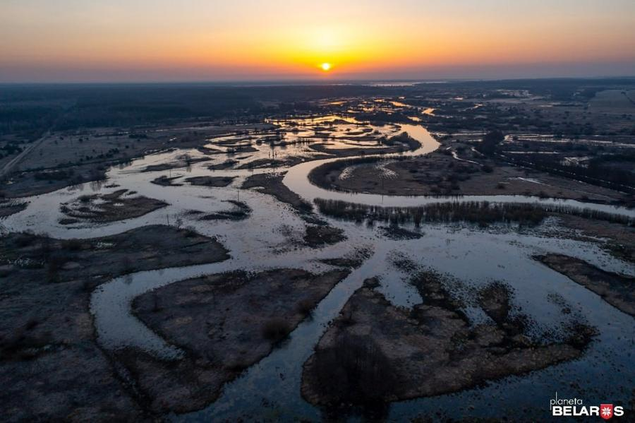
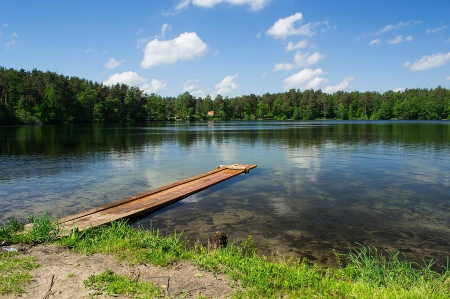
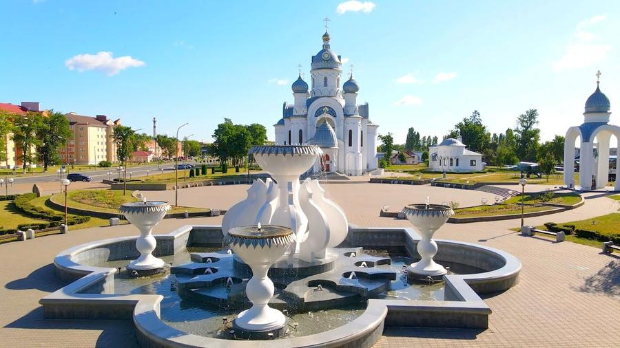
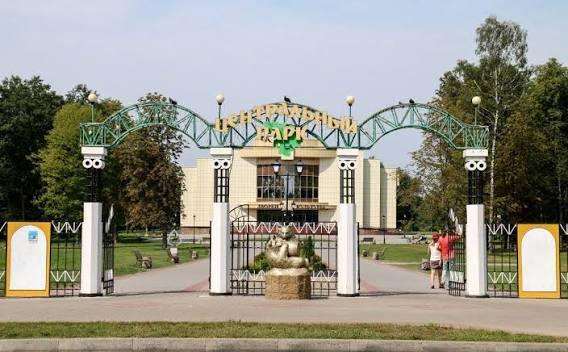
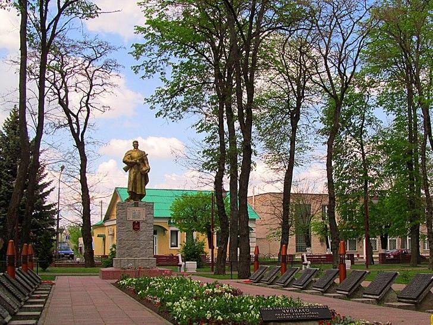
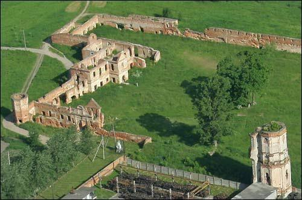
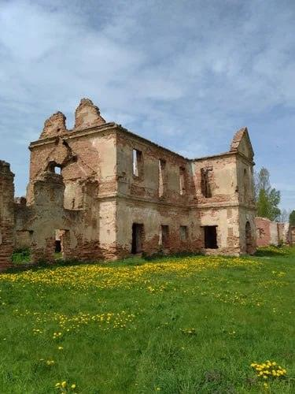

Картузский монастырь
Остатки комплекса XVII века, основанного Львом Сапегой, — главное историческое место города.
Открыть в Яндекс КартахГород на реке Ясельде: старинный центр Полесья и наследие Картузского монастыря.
Смотреть местаБереза — административный центр Березовского района Брестской области. Город раскинулся в Полесье на реке Ясельде, на пути между Брестом и Минском. Это спокойный районный центр с уютной застройкой, зелёными зонами и заметным историческим наследием.

Остатки комплекса XVII века, основанного Львом Сапегой, — главное историческое место города.
Открыть в Яндекс Картах
Тихие берега для неспешных прогулок и отдыха на природе среди полесских лугов и рощ.
Открыть в Яндекс Картах
Город-спутник района на берегу озера, известный энергетиками и тихими набережными.
Открыть в Яндекс Картах
Белоснежный храм и большой фонтан на просторной площади: любимое место прогулок и фотографий.
Открыть в Яндекс Картах
Зелёный парк с кованой аркой у входа и тенистыми аллеями для прогулок.
Открыть в Яндекс Картах
Первые письменные упоминания о поселении Береза в составе Великого княжества Литовского.
Лев Сапега основывает монастырь картузов, ставший центром духовной и хозяйственной жизни округи.
В составе Российской империи монастырь закрывают, а город развивается как торговый и транспортный узел.
В период пребывания в составе Польши в зданиях бывшего монастыря действует лагерь «Береза-Картузская».
Присоединение к БССР, послевоенное восстановление и рост города как районного центра.


Если карта не появилась, её показ блокирует платформа: используйте кнопки ниже.
Один из крупных белорусских производителей молочной продукции; в Березе действует производственный филиал компании.
Одно из крупнейших в стране предприятий по переработке мяса: колбасы и мясные деликатесы.
В Белоозёрске работает Березовская ГРЭС — крупный энергетический объект страны.
Расположение на магистрали Брест — Минск поддерживает транспорт и торговлю.
Проще всего приехать на автомобиле или автобусе по трассе М1 из Бреста, Минска и соседних городов. Есть и железнодорожное сообщение по линии Брест — Барановичи.